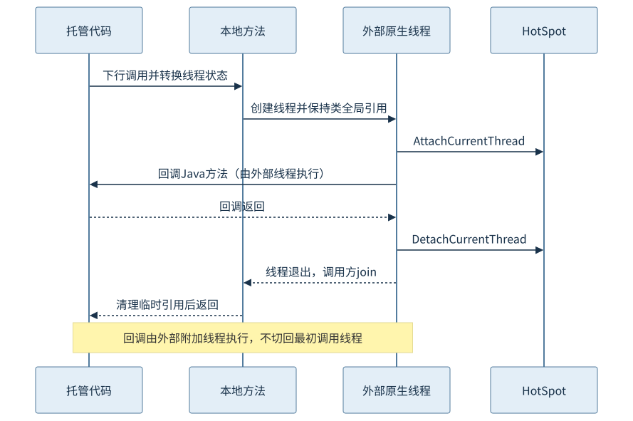
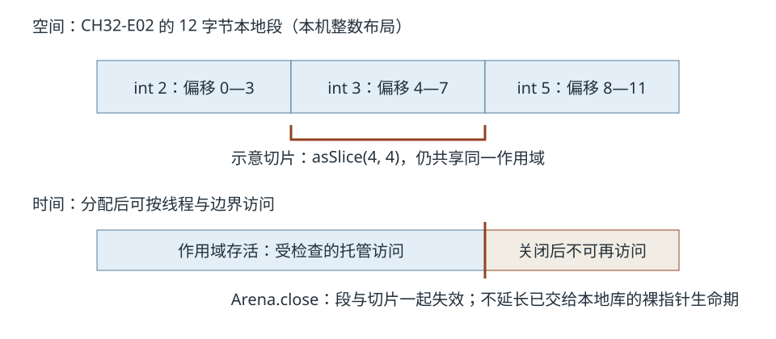
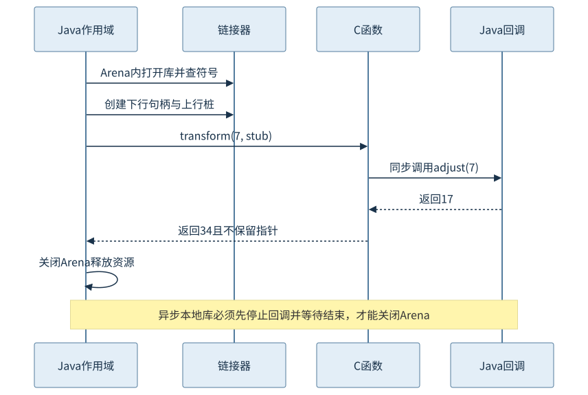

第七篇 · 启动、预热与本地互操作
第32章 本地调用与外部内存
本地指针不理解Java的资源作用域。跨越边界之前，必须知道当前线程是谁、对象由谁保持、指针何时失效，以及谁负责最后一次释放。
本章基于 Java 开发工具包（Java Development Kit，JDK）25.0.5.0.2 和 OpenJDK HotSpot，Java 虚拟机（Java Virtual Machine，JVM）实现锁定提交 1775ea114f64。规范、源码分析与本机有限观察分别说明。教学源码、运行说明和证据索引可相互定位。
32.1 本地调用边界
32.1.1 native声明后面还有链接协议
Java本地接口（Java Native Interface，JNI）让Java方法进入本地库。声明native不包含实现；库需要先装载，方法再按规定命名或RegisterNatives关联本地入口。静态本地方法收到JNIEnv指针和类引用，实例本地方法收到环境和接收者，后面才是声明的参数。托管对象参数是引用句柄，原始数值按相应类型传递。[S01]
本章NativeJourney显式加载libch32.dylib；头文件由javac -h生成，C函数使用JNIEXPORT和JNICALL。库、类加载器和本地方法的关联有生命周期约束，不应把一个动态库地址当成所有加载器都可无限共享的Java类型身份。方法ID或字段ID也不是强引用，长期缓存时需要另外保持定义类存活或按协议重查。
32.1.2 状态转换不等于换一条线程
普通下行本地调用通常在同一个线程上跨越Java、本地及运行时服务状态。HotSpot用状态转换让安全点、堆访问与回调能够协作；进入本地代码不是从此完全脱离运行时协议。JNI入口宏、JavaThread转换和本地句柄提供不同职责，不能仅凭Java Thread.State推测内部正在执行哪段转换。[S02]

JNIEnv只属于取得它的当前线程。外部pthread若要回调Java，必须使用可共享的JavaVM句柄调用AttachCurrentThread，取得自己的环境，并在没有Java帧留栈后DetachCurrentThread。CH32-E01的外部线程实际以ch32-attached名字回调，virtual=false，返回后由创建方join。图中的Java参与者表示托管代码角色，回调仍运行在外部附加线程，不会自动切回最初调用线程。[S03]
32.2 引用、句柄与可达性
32.2.1 三种引用有不同生命期
| 引用种类 | 有效期与持有作用 | 释放和使用边界 |
|---|---|---|
| 局部引用 | 限创建线程和相应本地调用／局部帧；保持对象可达 | 可显式删除；长期附加线程需用局部帧或及时删除 |
| 强全局引用 | 跨调用存活，直到显式删除；强持有对象 | DeleteGlobalRef；跨线程使用仍需各自JNIEnv及同步 |
| 弱全局引用 | 句柄可跨调用，但不保证对象存活 | DeleteWeakGlobalRef；先NewLocalRef尝试提升，再用非空强引用 |
本章在acquire中把16字节数组建立为强全局引用与弱全局引用。后续另一次本地调用尝试从弱句柄建立局部引用，再显式删除；finally调用release删除两个全局槽位。该正常路径展示跨调用持有与释放责任。因为强全局引用还在，本轮没有观察弱引用被清除，不能把它写成回收实验。

32.2.2 句柄稳定不等于对象地址稳定
垃圾收集（Garbage Collection，GC）需要知道本地代码仍持有哪些托管对象，并能在对象移动时更新对应关系。句柄间接层使本地代码无需长期保存物理对象地址；强全局引用因此也可能间接保留加载器或大对象图。锁定JNIHandles区分局部句柄和全局强／弱存储，NewGlobalRef不是把对象复制到永不移动的堆外内存。[S02]
判断两个句柄是否表示同一对象应使用规定的IsSameObject，而不是比较句柄数值。也不能先检查弱引用非空，再过一会儿直接使用并认为对象不会被回收：应把检查与取得可用强引用合并为NewLocalRef的结果判断。删除一个句柄不等于对象立即回收，更不等于其所有本地资源已自动释放，第12章的所有权分析仍然适用。
32.3 本地临界区与对象移动
32.3.1 复制、直接访问和临界区契约
数组区域接口可以复制一段数据；元素接口可能返回副本，也可能提供直接访问，必须遵守成对Release及相应提交模式。Critical接口进一步要求调用方保持很短的区间，避免阻塞、任意JNI调用或可能等待其他Java线程的操作。是否实际复制可由返回标志观察，但调用方必须满足契约，不能以某次isCopy=false为由扩大允许操作。[S04]
/* 摘自CH32-E01：长度已在临界区之前取得。 */
jint *elements = (*env)->GetPrimitiveArrayCritical(env, values, &copied);
if (elements == NULL) {
return -1;
}
jlong total = 0;
for (jsize index = 0; index < length; index++) {
total += elements[index];
}
(*env)->ReleasePrimitiveArrayCritical(env, values, elements, JNI_ABORT);
本例只读三个整数，释放后才打印isCopy和结果10。JNI_ABORT在这里只表达不提交副本修改；对于已经直接写入对象的访问，它不是撤销操作。临界区不自动给数组加应用互斥锁，多线程同时修改仍需要Java内存模型及本地同步协议。
32.3.2 收集器负责具体的移动协调
锁定jni_GetPrimitiveArrayCritical调用Universe::heap()->pin_object，返回数组元素基址，Release调用unpin_object。这个接口委派隐藏了不同收集器的具体协议：Garbage-First（G1）以区域固定机制协作，ZCollectedHeap进入ZJNICritical，Shenandoah有自己的固定与解除路径。相同JNI调用名不能推出所有收集器都暂停全部回收，或都以同样方式固定一个对象。[S02]
字符串还涉及内部编码：锁定GetStringCritical对于某些内部字符串表示需要转换到要求的字符形态。因此即使这个数组示例isCopy=false，也不能推出所有数组、所有字符串、所有虚拟机都无复制。本章不制造长期临界区或收集失败；第20—24章解释回收协作，这里只追踪正常短调用的协议边界。

32.4 外部函数与内存接口
32.4.1 段、布局和Arena分担三种职责
外部函数与内存（Foreign Function & Memory，FFM）应用程序编程接口（Application Programming Interface，API）用MemorySegment描述一段空间，用布局说明值的大小、对齐及字节序，用Arena管理本地分配的有效期和访问线程条件。这些是25版正式接口，本章不启用预览。confined Arena限拥有线程访问，共享Arena允许多线程，但不替数据竞争提供自动同步；自动管理和全局Arena又有不同释放时机。[S05]
本例MemorySegment.ofArray建立12字节堆内视图，其地址语义不能当作稳定的本地指针；Arena.allocateFrom创建12字节本地段。对象是否仍被Java变量引用，与底层本地区域是否仍有效是两个问题。保持MemorySegment对象并不阻止显式Arena.close使它失效。

32.4.2 受检查访问的保护有明确边界
托管访问核对偏移、大小、对齐、线程可访问性与作用域存活。切片缩小空间边界，却继承相关作用域；不能用切片把父段的生命期延长。本例关闭后只查询scope.isAlive=false，不再解引用段，也没有主动执行越界或释放后使用。[S05、S06]
把地址交给C函数后，C代码不会自动执行Java段检查。错误长度、错误布局、错误指针或本地库保留已失效地址仍可破坏进程。受限制的重新解释或裸地址操作还可能扩大调用者承诺的范围，不能把人工声明的范围当成已验证的真实容量。托管段访问安全与任意本地函数安全是不同结论。
32.5 调用约定、适配与访问控制
32.5.1 函数描述必须匹配真实调用约定
应用二进制接口（Application Binary Interface，ABI）规定参数、返回值、寄存器及栈等约定。Linker和平台适配器把方法句柄的类型映射到这些规则，FunctionDescriptor必须准确描述实际C签名。C long、size_t与Java long不能脱离平台机械对应；应读取链接器的规范布局映射，并处理结构体填充、对齐和可变参数条件。[S07]
本章自定义C函数明确使用int32_t输入和输出，接受一个同形回调指针；Java用JAVA_INT与ADDRESS描述。本机macOS AArch64编译与运行已完成，不据此宣称Windows或其他架构调用约定已经验证。库句柄通过Arena内的SymbolLookup取得；名字存在只证明查到符号，不证明描述符与本地实现匹配。

32.5.2 桩、异常和访问权限也有生命期
upcallStub把Java方法句柄暴露为本地函数指针，其有效期受所属Arena约束。本例C函数同步调用adjust(7)，得到17，再返回34，不保留指针；返回后才关闭Arena。若真实库异步保留回调，必须先取消登记并等待所有在途回调结束，再关闭桩和相关资源；“Java调用已返回”不足以证明本地库不会再次调用。[S07]
回调抛出的异常不能任意穿过本地帧。JNI调用Java方法后要检查待处理异常并在允许边界处理或返回；外部附加线程没有原先Java调用者可直接接收。本例边界报告并清理异常、返回状态，正常路径未触发。FFM上行目标若让异常逸出，会导致虚拟机突然终止；本例回调采用简单整数运算，不主动抛出异常。实际应用要在回调内部定义异常转换协议，不能指望C调用者理解Java异常。
25版运行时默认允许本例继续执行，但对未启用本地访问的System.load与SymbolLookup.libraryLookup实际发出受限制方法告警。对未命名模块显式--enable-native-access=ALL-UNNAMED后，本例告警消失。命名模块应按模块名授予；这是运行时权限配置，不是修复错误指针或保证本地库安全。未来拒绝行为与显式deny模式不能冒充本轮已触发的结果。[O01]
32.6 泄漏、越界与崩溃线索
32.6.1 以分配者、持有者和释放者登记责任
| 资源 | 本例持有者 | 结束边界 |
|---|---|---|
| 强／弱全局引用 | C静态槽位 | Java finally调用release；删除并清空槽位 |
| 外部线程类引用与上下文 | 创建线程的本地调用 | join后删除类全局引用，栈上下文才可结束 |
| 数组临界指针 | 当前本地调用 | Release之后不再访问；先释放再日志 |
| 本地内存段与回调桩 | confined Arena | 同步本地函数返回且不再持有后关闭 |
| 动态库查找资源 | 同一Arena | 所有依赖调用结束后随作用域关闭 |
这些释放不相互替代：删除全局引用只解除托管保留，不能代替free、关闭句柄或等待本地线程；关闭Java包装对象若没有正确实现本地释放，也不会自动清理外部资源。原生线程附加成功后还要分离，回调桩可达也不表示其Arena仍存活。CH32-E01只支持串行教学调用，不对并发重入的共享槽提供通用库契约。
32.6.2 把诊断线索接到具体资源
崩溃分析首先保留错误线程、问题帧、本地库与符号、版本架构、加载来源以及资源生命期。问题帧可能是最终触发点，早先的越界写才是破坏来源；在Java内存统计中找不到明显增长也不排除未被跟踪的本地分配。第12章的本地内存跟踪（Native Memory Tracking，NMT）覆盖边界不能被本地库加载成功扩大。
本章保留真实告警和正常输出，没有制造泄漏、错误线程访问、越界、强制终止或崩溃。第28章已经观察到本地帧与虚拟线程载体固定的协作，本章新增的是引用、内存段与回调责任，不能从“短调用完成”推出任意本地阻塞都会卸载载体。第35章将使用错误记录作推理；尚无故障记录的分支继续标为来源分析。
观察与边界
CH32-O01使用本机clang生成一个动态库，普通Java编译独立于本地编译。实际构建启用Wall、Wextra、Werror，退出0；JNI运行返回sum=10、isCopy=false、外部线程状态0，最后释放全局引用；FFM返回34并观察到Arena关闭后alive=false。完整输出和本地二进制摘要见运行记录。
没有跨平台调用、弱引用回收时点、错误指针或崩溃实测。此处的正常资源协议支持机制说明，不能当作通用本地库的安全认证。
回顾与思考
- JavaVM可跨线程保存，为什么JNIEnv不能直接传给新pthread？
- 弱全局引用存在，为什么使用对象前仍要尝试提升为局部强引用？
- 异步本地库持有回调指针时，Arena关闭前还缺哪一步？
本篇三项能力可以串起来：跨次运行缓存保存可复用信息；当前进程建立动态状态；跨语言资源则需要逐项确定线程、引用和释放边界。下一篇按这些机制选择诊断证据。
来源与实现入口
- S01：25版JNI设计，链接、参数、引用与异常。
- S02：锁定prims/jni.cpp的NewGlobalRef、GetPrimitiveArrayCritical、AttachCurrentThread等；runtime/jniHandles.cpp、interfaceSupport.inline.hpp；G1、Z与Shenandoah的pin/unpin实现。
- S03：调用接口，创建、附加、分离及销毁。
- S04：JNI临界数组接口，访问与限制。
- S05：MemorySegment、Arena；S06：锁定jdk/internal/foreign的AbstractMemorySegmentImpl、MemorySessionImpl、ConfinedSession。
- S07：Linker，函数描述、调用约定、上下行与异常边界；O01为本轮真实本地编译、告警及正常执行。